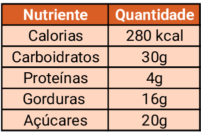

BROWNIE DE CHOCOLATE

Ingredientes
- 200 g de chocolate meio amargo
- 150 g de manteiga sem sal
- 3 ovos
- 1 xícara (200 g) de açúcar
- 1 colher (chá) de essência de baunilha
- 1 xícara (120 g) de farinha de trigo
- 3 colheres (sopa) de chocolate em pó
- 1 pitada de sal
- 100 g de nozes picadas (opcional)
Modo de preparo
- Pré-aqueça o forno a 180 °C.
- Unte uma forma média com manteiga e farinha ou use papel manteiga.
- Derreta o chocolate junto com a manteiga em banho-maria ou no micro-ondas, mexendo até ficar homogêneo.
- Em outra tigela, bata os ovos com o açúcar até formar um creme claro.
- Acrescente a essência de baunilha.
- Misture o chocolate derretido ao creme de ovos.
- Adicione a farinha, o chocolate em pó e a pitada de sal, mexendo delicadamente.
- Se desejar, acrescente as nozes picadas.
- Despeje a massa na forma.
- Asse por 25 a 35 minutos. O centro deve permanecer levemente úmido.
Tempo de preparo
- Preparo: 15 minutos
- Forno: 30 minutos
- Tempo total: 45 minutos
Rendimento
Aproximadamente 12 pedaços
Informações nutricionais (aproximadas por pedaço)
